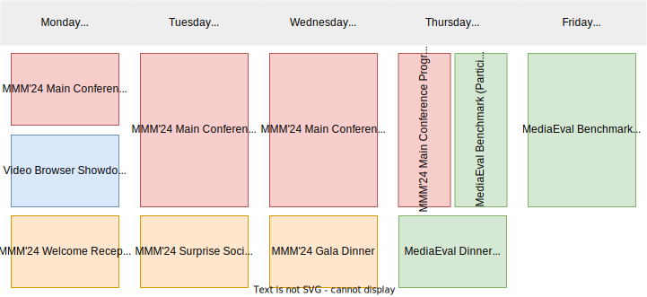

Preliminary Program Outline
Below is a preliminary program outline. We are working on the program details and will update this page when it is ready.

Below is a preliminary program outline. We are working on the program details and will update this page when it is ready.
 Visual Analytics wants to foster the strengths of humans and computers effectively through the combination of automatic data analysis methods, visualization, and interaction. Visual analytics is an extension of machine learning methods. It is also a complement to the already existing visualization techniques by the introduction of the concepts of reasoning and machine learning. Machine learning has
successfully developed models that outperform humans in several tasks. However, this success is limited when it comes to increasing knowledge, and providing new understanding based on new data. Humans uniquely understand the world through intuition, common sense, creativity, and emotion, capabilities that are required for many multi-faceted tasks. In this talk, I will present our work and my view on embedding the human in the loop in the machine learning context through the
concepts of visual analytics. In particular, we focus on data exploration, and hypothesis generation relying on dimensionality reduction methods as an effective visual analytics component for large high-dimensional data. Furthermore, I will discuss the promise, challenges, and current research in visual analytics to open the black box of machine learning models.
Visual Analytics wants to foster the strengths of humans and computers effectively through the combination of automatic data analysis methods, visualization, and interaction. Visual analytics is an extension of machine learning methods. It is also a complement to the already existing visualization techniques by the introduction of the concepts of reasoning and machine learning. Machine learning has
successfully developed models that outperform humans in several tasks. However, this success is limited when it comes to increasing knowledge, and providing new understanding based on new data. Humans uniquely understand the world through intuition, common sense, creativity, and emotion, capabilities that are required for many multi-faceted tasks. In this talk, I will present our work and my view on embedding the human in the loop in the machine learning context through the
concepts of visual analytics. In particular, we focus on data exploration, and hypothesis generation relying on dimensionality reduction methods as an effective visual analytics component for large high-dimensional data. Furthermore, I will discuss the promise, challenges, and current research in visual analytics to open the black box of machine learning models.
Prof. Dr. Anna Vilanova is full professor in visual analytics (vis.win.tue.nl) since October 2019, at the department of Mathematics and Computer Science, at the Eindhoven University of Technology (TU/e). Previously she was associate professor for 6 years at the Computer Graphics & Visualization Group at EEMCS at the University of Delft, the Netherlands. From 2002 to August 2013, she was Assistant Professor at the Biomedical Image Analysis group of the Biomedical Engineering Department at TU/e. She is leading a research group in the subject of visual analytics and multivalued image analysis and visualization, focusing on visual analytics for high dimensional complex data and explainable AI. She focuses on Biomedical applications such as: Diffusion Weighted Imaging, 4D Flow and Pan-genomics. She was member of the steering committee of EuroVis (2014 -2018) and VCBM (2018-2022). She is elected member of the EUROGRAPHICS executive committee since 2015, vice president (2019-2022), and currently president of EUROGRAPHICS. She also became EUROGRAPHICS fellow in 2019. She is elected member of IEEE VIS Steering Committee (VSC) since 2021.
 Multimodal foundation models are a revolutionary class of AI models that provide impressive abilities to generate multimedia content and do so by interactive prompts in a seemingly creative manner.
These foundation models are often self-supervised transformer-based models pre-trained on large volumes of data, typically collected from the web.
They already form the basis of all state-of-the-art systems in computer vision and natural language processing across a wide range of tasks and have shown impressive transfer learning abilities.
Despite their immense potential, these foundation models face challenges in fundamental perception tasks such as spatial grounding and temporal reasoning, have difficulty to operate on low-resource scenarios, and neglect human-alignment for ethical, legal, and societal acceptance.
In this talk I will highlight recent work from my lab that identifies several of these challenges as well as ways to update foundation models to address these challenges and to do so in a sustainable way, without the need to retrain from scratch.
Multimodal foundation models are a revolutionary class of AI models that provide impressive abilities to generate multimedia content and do so by interactive prompts in a seemingly creative manner.
These foundation models are often self-supervised transformer-based models pre-trained on large volumes of data, typically collected from the web.
They already form the basis of all state-of-the-art systems in computer vision and natural language processing across a wide range of tasks and have shown impressive transfer learning abilities.
Despite their immense potential, these foundation models face challenges in fundamental perception tasks such as spatial grounding and temporal reasoning, have difficulty to operate on low-resource scenarios, and neglect human-alignment for ethical, legal, and societal acceptance.
In this talk I will highlight recent work from my lab that identifies several of these challenges as well as ways to update foundation models to address these challenges and to do so in a sustainable way, without the need to retrain from scratch.
Prof. Dr. Cees G.M. Snoek is a full professor in computer science at the University of Amsterdam, where he heads the Video & Image Sense Lab. He is also a director of three public-private AI research labs: QUVA Lab with Qualcomm, Atlas Lab with TomTom and AIM Lab with the Inception Institute of Artificial Intelligence. At University spin-off Kepler Vision Technologies he acts as Chief Scientific Officer. Professor Snoek is also the director of the ELLIS Amsterdam Unit and scientific director of Amsterdam AI, a collaboration between government, academic, medical and other organisations in Amsterdam to help the city develop and deploy responsible AI. His research interests focus on making sense of video and images. He has published over 200 refereed book chapters, journal and conference papers, and frequently serves as an area chair of the major conferences in computer vision and multimedia. He is currently an associate editor for Computer Vision and Image Understanding and the IEEE Transactions on Pattern Analysis and Machine Intelligence.
TBA.
Social Events